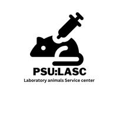

Animal Procedure Reporting System — ศูนย์สัตว์ทดลอง มหาวิทยาลัยสงขลานครินทร์ (PSU:LASC)
กรณีวิกฤต (สัตว์ชัก หายใจลำบาก เลือดออกมาก สัตว์หลุด ระบบห้องเลี้ยงขัดข้อง) ให้โทรแจ้งทันทีควบคู่กับการส่งแบบฟอร์มนี้
allowed) จึงจะเห็นรายชื่อผู้ลงทะเบียนและอนุมัติได้
ลงทะเบียน ชื่อ-สกุล (หรือเชิญบัญชีเข้ากลุ่มสัตวแพทย์แล้วพิมพ์ ลงทะเบียน ในกลุ่ม)
คำขอจะขึ้นด้านล่าง กด「➕ เพิ่มเป็นผู้รับแจ้ง」→ บันทึก → เริ่มรับแจ้งเตือนได้ทันที ·
เพิ่มเฉพาะอีเมลก็ได้โดยไม่ต้องใช้ LINE
n8n-vet-alert-workflow.json และ n8n-line-register-workflow.json
ตามคู่มือ n8n-vet-alert-setup.md — ระบบส่งเฉพาะเลขอ้างอิงของเรื่องไปให้ n8n
แล้ว n8n อ่านรายละเอียดจริงและรายชื่อผู้รับแจ้งจาก Firebase เอง จึงปลอมข้อความแจ้งเตือนไม่ได้เมนูนี้ใช้สำหรับเจ้าหน้าที่ศูนย์สัตว์ทดลองในการดึงข้อมูลโครงการจากระบบจริยธรรมการวิจัยในสัตว์ (animalethic.research.psu.ac.th) เข้าสู่ทะเบียนโครงการ เพื่อให้นักวิจัยเลือกเลขที่โครงการเมื่อรายงาน
animalethic-export.json
1) เปิดหน้า protocol ในระบบ animalethic.research.psu.ac.th (ล็อกอินแล้ว) และกด「More info」ให้รายละเอียดแสดง
2) กด Ctrl+A (เลือกทั้งหน้า) แล้ว Ctrl+C (คัดลอก)
3) วางในช่องด้านล่าง (Ctrl+V) แล้วกด「แยกข้อมูลอัตโนมัติ」— ระบบจะกรอกฟอร์มให้ ตรวจทาน/แก้ไขก่อนกดบันทึก